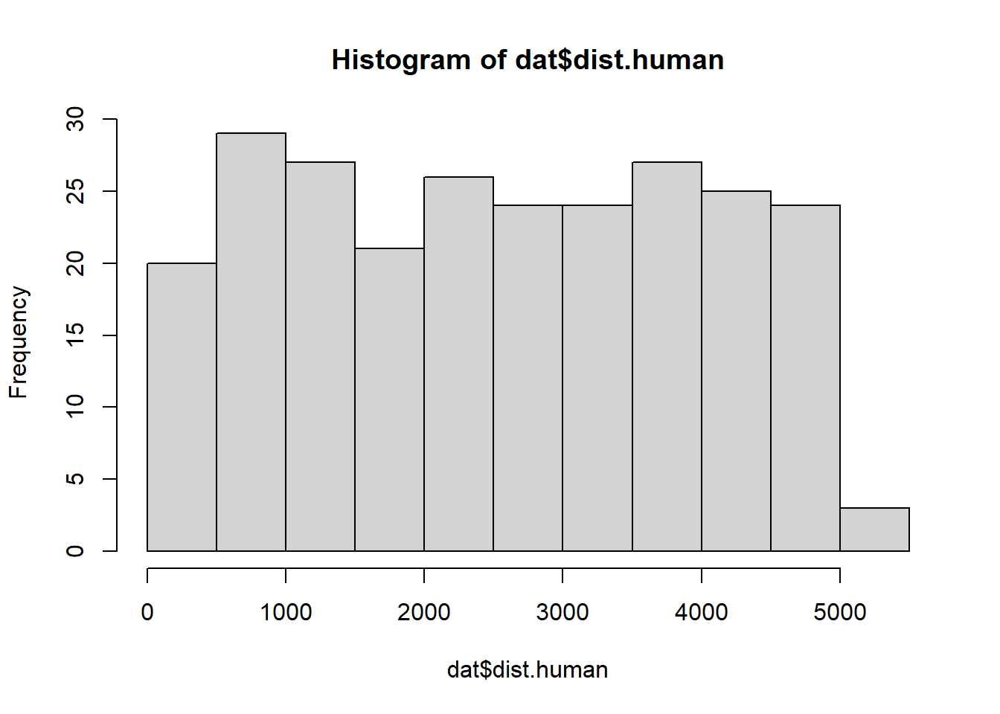
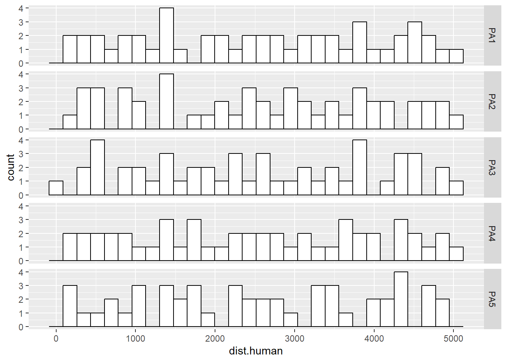

Create a report using Markdown that presents code, results, and summarized findings that makes inference to the occurence of the Annamite striped rabbit (Nesolagus timminsi) across multiple protected areas in Vietnam.
The Annamite striped rabbit is a forest-dwelling lagomorph that was discovered by science in the mid-1990s. Little is known about this species. What has been done indicates that hunting pressure is a primary driver of its distribution. As such, protected areas are paramount to their conservation. However, protected areas vary in their effectiveness in limiting hunting and some protected areas are founded on multi-use, such that hunting is still allowed.
Data and Hypothesis
A camera trap study was conducted in the Annamite mountain range of Vietnam to better understand the distribution of the unique mammal fauna. A central focus was to learn about the effects of anthropogenic activity on the distribution of the Annamite striped rabbit. A total of 50 camera traps were deployed at 5 different protected areas. The cameras were placed systematically with a random starting point to capture variation in the Euclidean distance between a camera and the nearest center of human activity (i.e., village/town). A colleague organized the data, such that for each camera site, the presence (1) or assumed absence (0) of the rabbit was recorded (occur); we will assume there are no false-positives or false-negatives in these data. The main variables of interest are the protected areas (PA) and the distance to human activity (dist.human) in meters.
Working with your colleagues, they outline their hypothesis that the main driver of rabbit occurrence is hunting within the protected areas. However, there is no spatial variable or direct measure of hunting pressure throughout the park. Rather, they predict that increasing distance away from human activity will lead to higher rabbit occupancy because people will only travel so far in difficult mountainous terrain. They also hypothesize that this effect will vary by protected area because there is different levels of patrolling and enforcement. But, regardless of protected area, they hypothesize that occurrence at the edge of the protected areas nearest to human activity will be the same because of the similar density of people and that occurrence will be very low.
To do
Fit the data (rabbit.occ.data.csv) using a single model that captures the hypothesis of your colleague.
visualize and summarize the data
present all parameters with measures of uncertainty
describe what each parameter means; discuss relevant measures of statistical clarity using hypothesis tests or confidence intervals
make sure to provide evidence whether there is or is not variation of ‘dist.human’ across protected areas
make prediction plots that display all relevant variables: PA and dist.human
make a prediction plot for a ‘typical’ protected area; make it clear why this results is important
summarize results and offer suggestions for the type of followup study that would be useful
# how many cameras at each protected areatable(dat$PA)
PA1 PA2 PA3 PA4 PA5
50 50 50 50 50
# histogram of distance to human activityhist(dat$dist.human)

# histograms of human activity measured across PA's ggplot(dat, aes(x=dist.human))+geom_histogram(color="black", fill="white")+facet_grid(PA~.)
`stat_bin()` using `bins = 30`. Pick better value with `binwidth`.

Model Fitting
To evaluate the hypothesis, I fit a hierarchical binomial regression model to the rabbit occurrence data. First, to improve model convergence and maintain the main covariate of interest in terms of an understandable measure of distance, I scaled the dist.human variable by 1000 to obtain distance in kilometers. This also allows the intercept to reflect the logit-value of occurence when dist.human is zero, which is a consideration of the hypothesis.
The model includes a fixed effect intercept (i.e., does not very by protected area) and a random effect for scaled distance to human activity (dist.human.sc) by protected area (i.e., the slope does vary by protected area). This model structure captures the types of variation proposed in the hypothesis. I will use \(\alpha = 0.05\) to determine statistical clarity.
library(glmmTMB)#scale distances to kilometersdat$dist.human.sc=dat$dist.human/1000model=glmmTMB(occur~dist.human.sc+(0+dist.human.sc||PA), family=binomial(link="logit"), data=dat)
In our summary outputs, we see that the population mean (across protected areas) slope is statistically clearly different than zero (p-value is < \(\alpha\) and 95% confidence intervals do not include zero) and is positive. As such, across all protected areas (including unsampled areas), a ‘typical’ protected area is expected to have increasing occurrence of the striped rabbit the further from centers of human activity. The prediction that striped rabbit occurrence would be low near human activity is supported with a predicted occurrence of 0.13 (i.e., plogis(-1.9236)) at a distance of zero. We also see that there is support for variation in the effect of dist.human.sc as the standard deviation of the protected area slope differences is well above zero at 0.33 and the 95% confidence intervals do not include zero.
# A tibble: 5 × 9
effect component group level term estimate std.error conf.low conf.high
<chr> <chr> <chr> <chr> <chr> <dbl> <dbl> <dbl> <dbl>
1 ran_vals cond PA PA1 dist.hum… -0.192 0.188 -0.561 0.177
2 ran_vals cond PA PA2 dist.hum… 0.0409 0.191 -0.334 0.416
3 ran_vals cond PA PA3 dist.hum… -0.349 0.189 -0.720 0.0211
4 ran_vals cond PA PA4 dist.hum… 0.533 0.264 0.0159 1.05
5 ran_vals cond PA PA5 dist.hum… -0.0941 0.189 -0.465 0.277
Looking at the protected area specific differences from the population-mean (i.e., the random effect values), we see the largest difference of 0.53 for protected area 4, which is statistically clearly different than zero as the 95% confidence intervals do not include 0. No other random effect are statistically clearly different than the population mean. This suggests an increase in power is warranted by sampling more sites at each protected area.
If we combine the population mean effect and the differences by protected area, we get the mean slope of dist.human.sc by protected area. We see that all slopes are positive, indicating that there is no evidence that increasing distances reduces rabbit occurence.
Next, lets visualize the probability of rabbit occurrence at a typical site. This is an important result, as it captures the relationship we would expect at protected areas we have not sampled.
We found support for our hypothesis. There is evidence for variation of the effect of distance to human activity on striped rabbit occurence and that as distances increases, occurrence increases. We are measuring a proxy for hunting pressure, but assuming distance relates to human hunting pressure and not other confounding factors, our hypothesis is supported. A follow up study might want to plan for increasing the sampling at each protected area to better test for differences of the main effect by protected area (i.e., increase the statistical power). Second, we may want to consider a random intercept to evaluate the hypothesis that there is variation of rabbit occurrence near human activity.